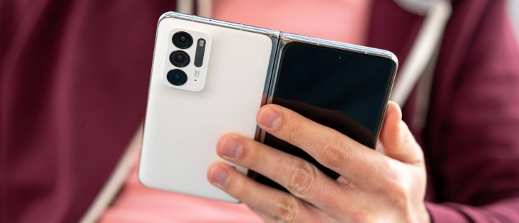
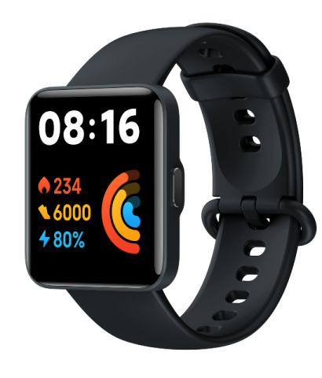
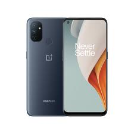
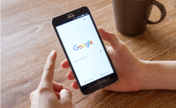

|  |
 |
 |
 |
|
|---|
Oppo's INNO Day events have been thoroughly interesting with the Air Glasses and the promising MariSilicon X Imaging NPU, but without a doubt, the Find N was the real showstopper.
The iconic Find series is getting its first foldable smartphone, and it's looking fantastic. The new Oppo Find N is smaller than the most recent Galaxy Fold, and it employs a gapless design courtesy of its proprietary Flexion hinge. But it also gets the best feature the Fold can offer - its Samsung-made foldable Dynamic AMOLED screen or at least a shrunken version of it.
So, the Find N is built around a 7.1-inch foldable AMOLED screen made by Samsung. It supports dynamic 120Hz, HDR10+ and has the same sharpness as the Fold3's - about 370ppi. Unlike the Fold, the Find N has a punch-hole for the inner selfie camera instead of an under-screen one. We can't say we mind that.
The Find N has another screen on the outside, of course. It's a nearly bezel-less 5.49-inch AMOLED, also perforated, with 402ppi density and Gorilla Glass Victus protection. The refresh rate for this panel is fixed at 60Hz. Both screens support wide color, are equally calibrated for superb color matching, and can offer up to 1000nits of peak brightness.
Another Gorilla Glass Victus sheet keeps the back safe, excluding the tri-camera setup. The 50MP primary, the 16MP ultrawide and the 13MP zoom snappers sit on a beautiful ceramic piece.
Xiaomi has announced the launch of three new smart watches and bands available in the UK from today.
The Mi Smart Band 6 NFC retails at £49.99 and includes the usual smart band features such as sleeping and stress-level detection, but this wearable can make contactless payments due to Xiaomi’s partnership with money app Curve
The Redmi Watch 2 Lite has 100 watch faces to choose from, 100 exercise modes to explore and is water resistant up to 50 metres.
The watch comes in three frame colours, six strap colours, boasts a battery life of up to 10 days and retails at £59.99.
The latest update for the OnePlus 9 series has still not addressed some of the reported problems.
OnePlus 9 and OnePlus 9 Pro are getting OxygenOS 12 based on Android 12 again. The latest release is promised to resolve the problems that were introduced by the previous update, which started rolling out last week.
OnePlus had suspended the last update for the OnePlus 9 series after users complained about the bugs and issues it carried.
Similar to OnePlus, Samsung is said to have resumed the stable Android 12 update — after suspending it over reported problems. It is reportedly rolling to Samsung Galaxy Z Flip 3 and Galaxy Z Fold 3 smartphones.
Apple launched an app to allow US users of Android devices to detect nearby AirTags, a move meant to limit the tracking devices being used in secret.
The Tracker Detect app scans for AirTags and other devices using Apple’s Find My network including iPhones with a view to reducing the chances of tags being hidden to track people or things.
Reports have linked AirTags to thefts of luxury vehicles.
The app will focus on devices which have been separated from their owners for a period of time rather than displaying all nearby AirTags.
Google stores your location and data history when you use any of its apps. We'll show you how to turn that off.
Do you use any of Google's apps? If so, you're probably being tracked. Even if you turned off location history on your Google account, you're not completely in the clear yet.
While disabling that setting sounds like a one-and-done solution, some Google apps are still storing your location data. Just opening the Google Maps app or using Google search on any platform logs your approximate location with a time stamp.
Following a 2018 investigation by the Associated Press, however, Google has made it easier to control what location and other data is saved, and what is deleted with features like Your Data in Maps and Search, which give you quick access to your location controls. You just have to know where to look.
Turning off location history only removes where you've been from the Google Maps Timeline feature, which logs your location with certain data at a specific time.
Google's support page on the matter says that even when turned off, "some location data may continue to be saved in other settings," like your web and app activity.